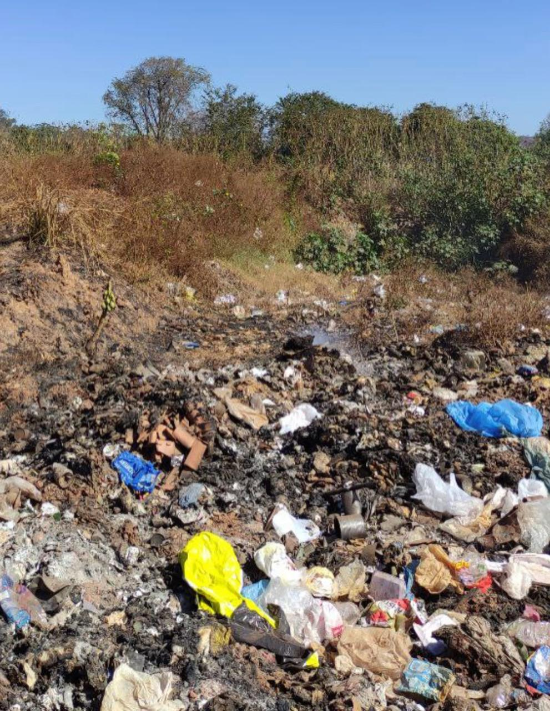
RSU
Resíduo sólido urbano: gaseificação e biometano que transformam o aterro em ativo energético.
Potencial · sob medida · a validar
Da simulação à operação, a 4WaTT projeta, constrói e opera a infraestrutura completa. Engenharia própria em cada etapa, a mesma inteligência técnica do projeto acompanha a operação.
Antes de comprometer capital, o decisor precisa de certeza. Nossa engenharia existe para transformar risco em número, cada etapa medida, documentada e defensável.
EVTE, business plan e projetos executivos in-house. Você decide sobre cálculo, não sobre achismo.
Construção turn-key (BOT e EPCM). Entregamos uma usina pronta para operar, não um relatório na gaveta.
Contratos recorrentes que mantêm a planta no pico de performance e a receita previsível.
P&D, patentes e automação próprias. A engenharia que o mercado ainda vai copiar.
Manifesto 4WaTTNão vendemos projeto.
O Brasil carrega no resíduo o poder de se tornar uma potência energética. A 4WaTT faz isso acontecer.
Construímos patrimônio energético que permanece, com ciência aplicada e operação de excelência.
Você permanece dentro do mesmo ecossistema em todas as fases do projeto. Sem fricção, sem troca de fornecedor, sem perda de contexto.
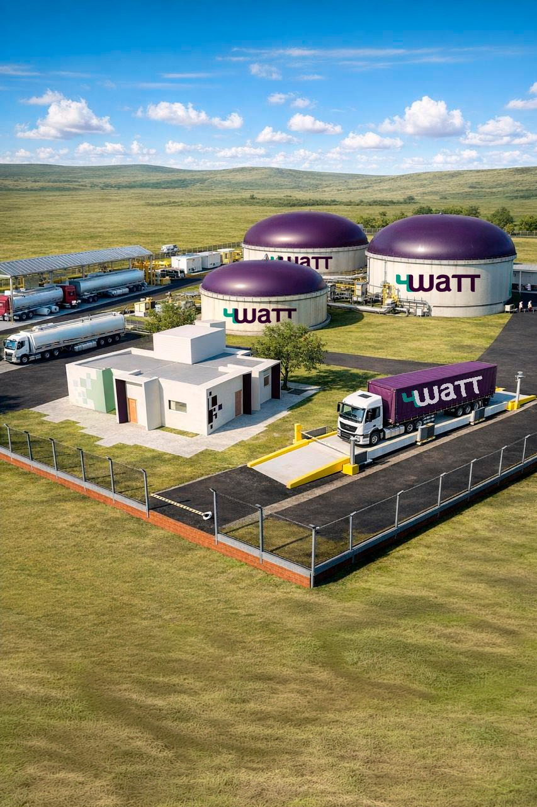
 Execução
ExecuçãoConstrução turn-key da usina (BOT e EPCM). Entregamos pronta para operar.
02 Recorrência
RecorrênciaOperação e manutenção que protege a performance e a receita por anos.
03 Diagnóstico
DiagnósticoEVTE, business plan e projetos executivos, por hora ou por projeto.
04 Capital
CapitalAssessoria de captação bancária. Estruturamos o financiamento do CAPEX.
05 Qualificação
QualificaçãoCalculadora de pré-viabilidade com IA. Potencial do seu resíduo em minutos.
Não tratamos resíduo genérico. Dimensionamos a rota tecnológica certa para cada substrato.

Resíduo sólido urbano: gaseificação e biometano que transformam o aterro em ativo energético.

Dejeto suíno: um dos substratos mais eficientes e estáveis para biodigestão contínua.
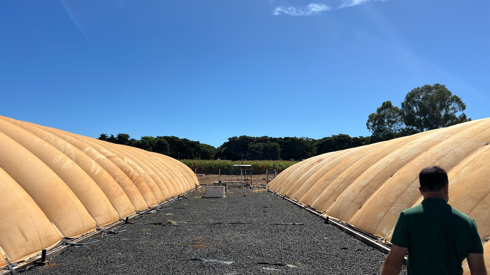
Dejeto de confinamento convertido em biogás e biofertilizante de alto valor.
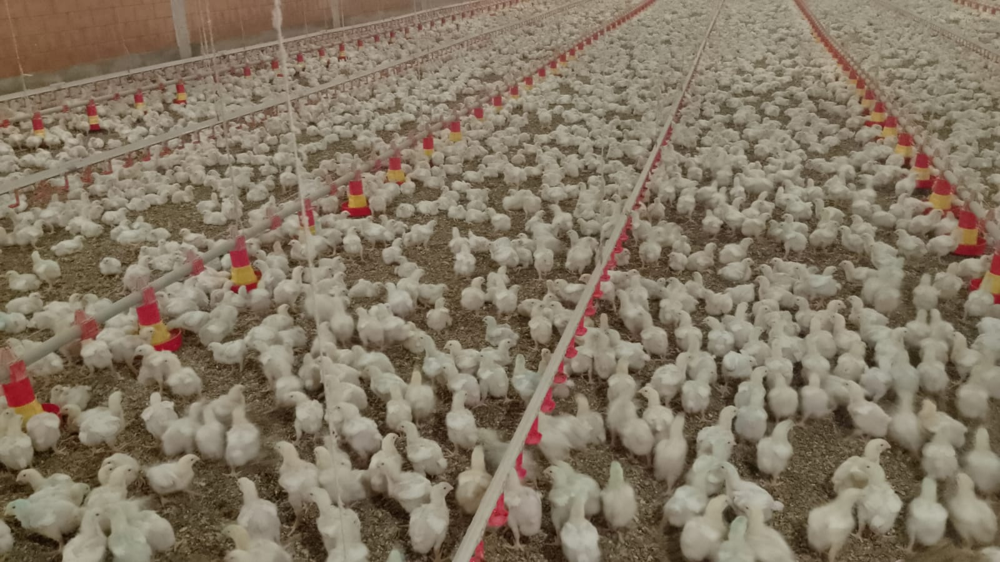
Cama de aviário e resíduos de granja, com forte potencial de geração de biogás.
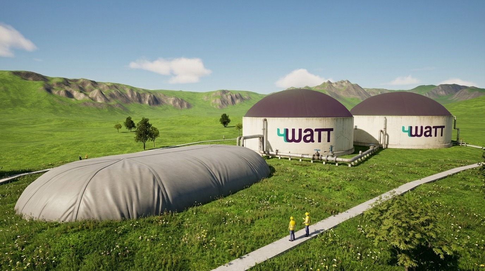
Efluentes e resíduos de abate com alta carga orgânica viram energia.
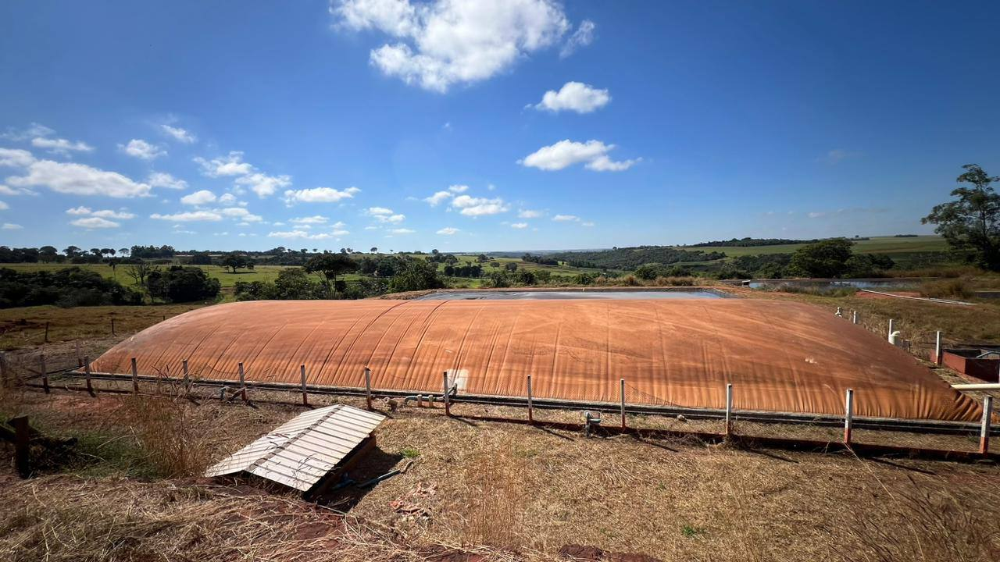
Vinhaça e torta de filtro: biogás integrado à operação sucroenergética, fechando o ciclo.
Faixas de potencial calculadas sob medida pela engenharia 4WaTT. Os números reais dependem do seu resíduo, volume e localização.

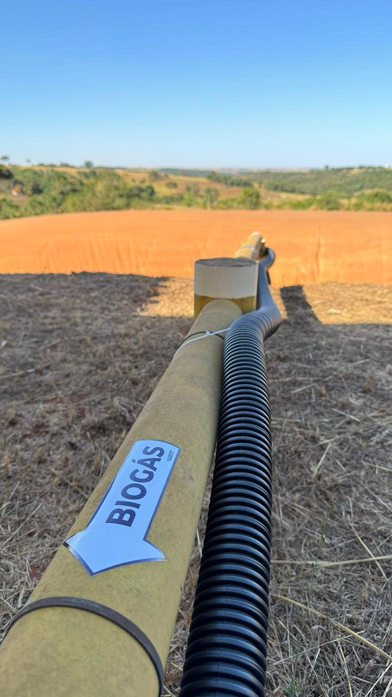
Robustez industrial e tecnologia aplicada. Cada equipamento é dimensionado para extrair o máximo do seu resíduo.
Reatores dimensionados para o seu substrato, com a máxima conversão de resíduo em biogás.
Remoção de H₂S e CO₂ para biometano em especificação de injeção e uso veicular.
Sensores, SCADA e lógica de operação para a planta rodar sempre no ponto ótimo.
Skids, gaseificador, filtros H₂S e refinaria. Engenharia modular e escalável.
Cada submarca é uma etapa da compra. Da simulação à expansão, tudo fica tangível.
Calcule o potencial do resíduo.
Avalie a maturidade do projeto.
Viabilidade e business plan.
Construção turn-key da usina.
Operação e manutenção contínua.
Novos projetos e participação.
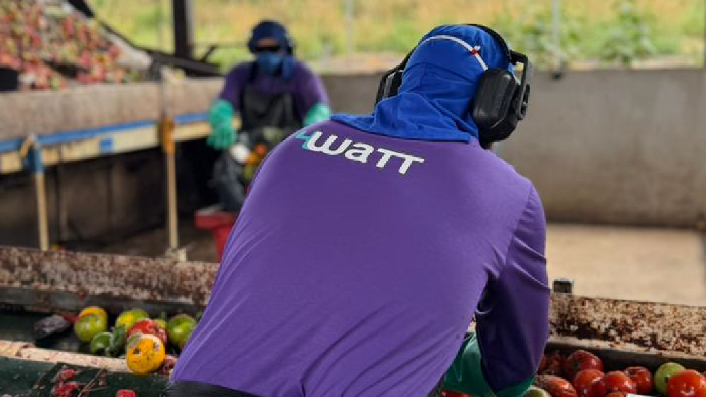

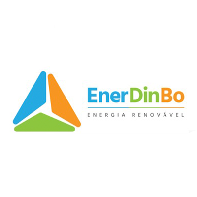
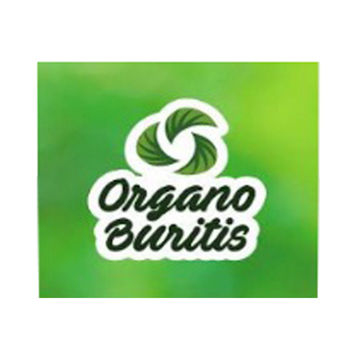
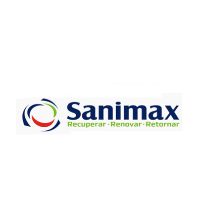
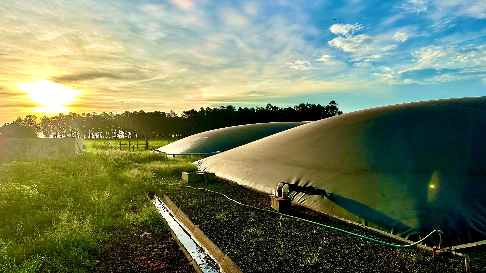
Escolha por onde começar. Sem fricção, sem marketing vazio. Você fala direto com quem projeta, constrói e opera.